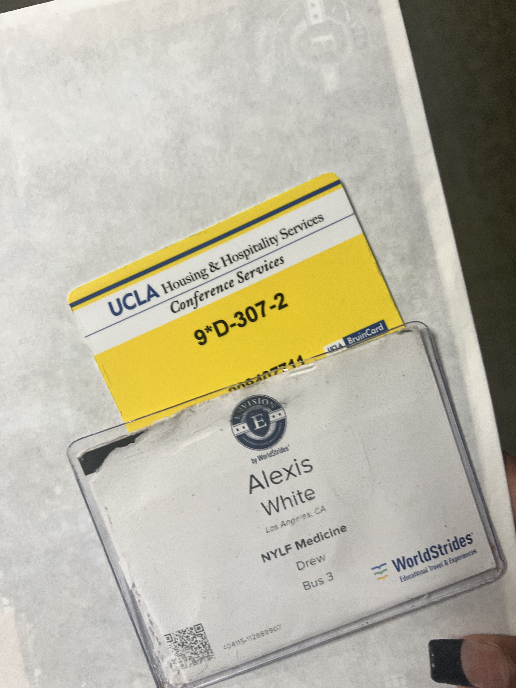
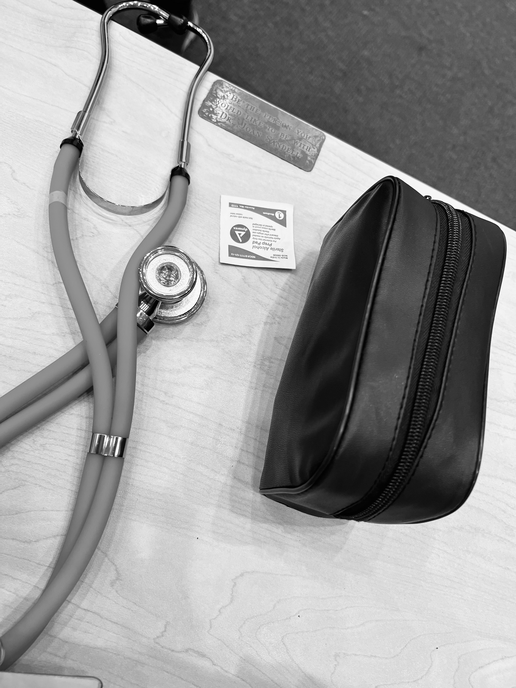
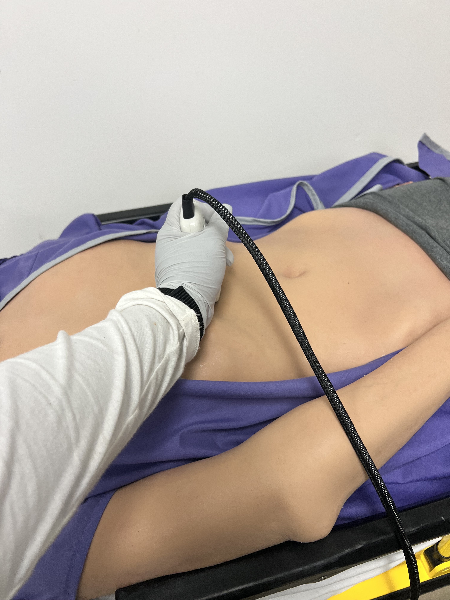
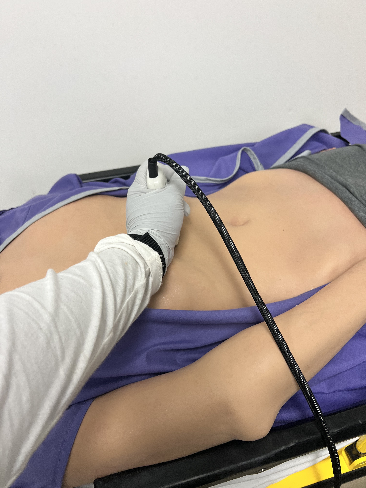
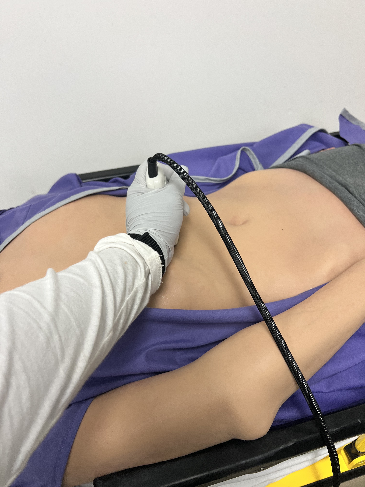

Alexis White-Reyes
Who Am I
In the bustling city of New York, amidst the towering skyscrapers and bustling streets, there lived a young woman named Alexis. At the age of 18, Alexis possessed a rare combination of compassion, wit, and ambition that set her apart from her peers. With a heart as big as the city itself and a determination to make a difference in the world, Alexis was destined for greatness.
From a young age, Alexis had shown a natural inclination towards caring for others. Whether it was tending to scraped knees on the playground or offering a shoulder to cry on during tough times, she had a knack for making people feel better. As she grew older, Alexis's desire to help others only intensified, leading her to pursue a career in healthcare.
But Alexis's aspirations went beyond simply becoming a doctor or nurse. She dreamed of working as a pediatrician assistant, specializing in caring for the youngest and most vulnerable members of society. With a passion for pediatric medicine and a deep understanding of the unique needs of children, Alexis knew that this was where she could make the greatest impact.
Despite her young age, Alexis approached her goals with a level of professionalism and maturity that belied her years. She understood the importance of hard work, dedication, and continuous learning in the field of healthcare. Determined to excel in her chosen career path, Alexis enrolled in a rigorous pre-med program at a prestigious university, where she immersed herself in the study of biology, chemistry, and child development.
But Alexis's commitment to her education was only one aspect of her journey towards becoming a pediatrician assistant. She also dedicated herself to gaining practical experience in the field, volunteering at local hospitals and clinics, where she assisted doctors and nurses in caring for pediatric patients. Whether it was comforting a frightened child before a procedure or helping to explain medical terms to worried parents, Alexis approached her work with compassion, empathy, and a genuine desire to make a difference.
In addition to her passion for helping others, Alexis had a talent for making people laugh. With a quick wit and a sharp sense of humor, she had a knack for lightening the mood in even the most stressful situations. Whether it was cracking jokes with her fellow volunteers during a late-night shift or cheering up a young patient with a silly story, Alexis's laughter was contagious, spreading joy and warmth wherever she went.
As Alexis worked tirelessly towards her goal of becoming a pediatrician assistant, she never lost sight of the reason why she had chosen this path—to make a positive impact on the lives of others. Whether it was through her compassionate care, her infectious laughter, or her unwavering dedication to her patients, Alexis was determined to leave her mark on the world, one smile at a time. And as she embarked on the next chapter of her journey, she did so with a sense of purpose, knowing that she was destined to make a real difference in the lives of those she served.
Experience
Developer
• Developed websites for company X
• Speaker at hack-a-thons
• Experience with HTML, Photoshop
Teaching Assistant
• Ran sessions to help students learn how to code
• Reviewed and graded student coding projects
• Created educational content to help promote student education
• TA'd for over 400 students each academic quarter
Education
UC Riverside
Portfolio


 

